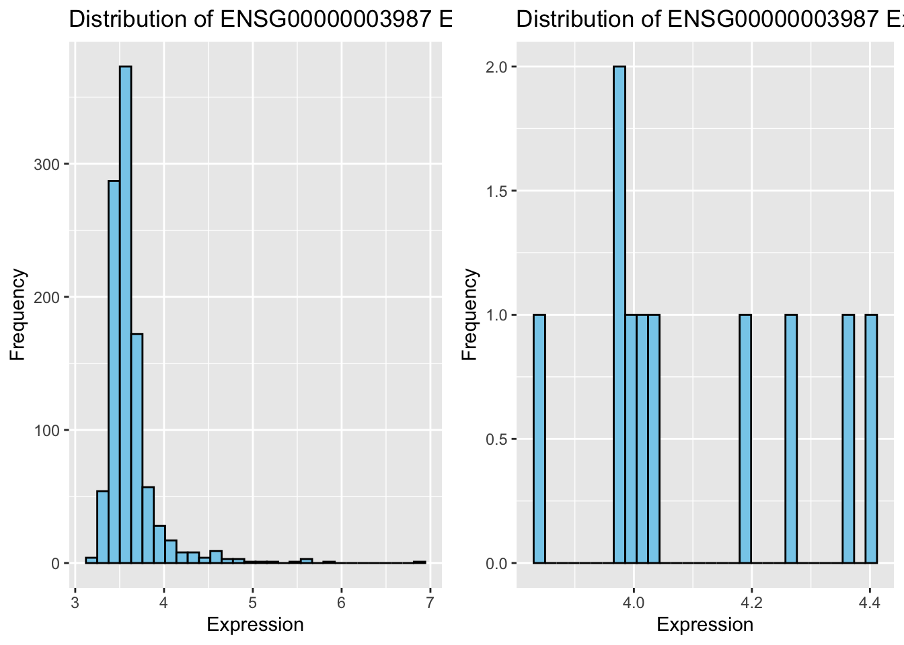

Data Acquisition and Preparation
Like before, we will use smaller versions of the PharmacoSets for the workshop to minimize processing time. Let’s load these datasets in and subset for common cell lines and .
Extracting required vectors for biomarker analysis
Recall there are two components needed for a biomarker association analysis: - Feature data (molecular profile) - Drug response
Say we are interested in ENSG00000003987 expression association with PD-0325901.
We can start by extracting this data from both PSets.
Gene Expression Data
# specify our gene of interest
gene <- "ENSG00000003987"
# extract the RNA-Seq data for our gene of interest in both GDSC and CCLE
ccle_rna_data <- summarizeMolecularProfiles(
CCLEsmall,
mDataType = "rna", features = gene
) |> assay()
gdsc_rna_data <- summarizeMolecularProfiles(
GDSCsmall,
mDataType = "rna", features = gene
) |> assay()## | | | 0% | |======================================================================| 100%## 22RV1 23132-87 380 5637 639-V 647-V 697
## ENSG00000003987 4.197327 4.022529 4.000509 4.031896 3.977781 3.834624 4.36307
## 769-P 786-0 8-MG-BA
## ENSG00000003987 4.397028 3.973001 4.275385Drug Response Data
Next, let’s take a look at the available drug response data
## ic50_published auc_published amax_published
## drugid_AEW541_1321N1 8.000000 0.0873750 -42.55801
## drugid_AEW541_22Rv1 2.329924 0.2205000 -71.58934
## drugid_AEW541_42-MG-BA 2.682130 0.1144375 -63.49137
## drugid_AEW541_5637 5.002314 0.1243550 -62.35278
## drugid_AEW541_639-V 1.736181 0.1936250 -51.95981
## drugid_AEW541_697 4.260822 0.1087625 -73.33379
## auc_recomputed ic50_recomputed amax_recomputed
## drugid_AEW541_1321N1 0.1017047 13.09700 42.87563
## drugid_AEW541_22Rv1 0.2239774 2.18654 70.37213
## drugid_AEW541_42-MG-BA 0.1215999 2.68981 63.00413
## drugid_AEW541_5637 0.1092448 5.19939 61.43152
## drugid_AEW541_639-V 0.1912847 5.40523 54.22604
## drugid_AEW541_697 0.1146054 4.17688 69.94055We can see a few options of drug response metrics to choose from. We will use
auc_published for our drug response associations.
# extract AUC_published data from CCLE and GDSC
ccle_auc <- summarizeSensitivityProfiles(
CCLEsmall,
sensitivity.measure = "auc_published",
summary.stat = "median",
verbose = FALSE
)
gdsc_auc <- summarizeSensitivityProfiles(
GDSCsmall,
sensitivity.measure = "auc_published",
summary.stat = "median",
verbose = FALSE
)
ccle_auc[1:5,1:5]## 1321N1 143B 22RV1 23132-87 253J-BV
## PD-0325901 0.1148875 NA 0.385000 NA NA
## 17-AAG 0.4177000 NA 0.372460 NA NA
## AEW541 0.0873750 NA 0.220500 NA NA
## Nilotinib NA NA 0.000000 NA NA
## PHA-665752 0.0333750 NA 0.094375 NA NAThe summarizeSensitivityProfiles() function nicely pulls the drug response data
and converts it into a sample~drug matrix for easy use.
We only need the drug response data for PD-0325901, so let’s pull that out.
drug <- "PD-0325901"
ccle_drug_data <- ccle_auc[drug, ]
gdsc_drug_data <- gdsc_auc[drug, ]
head(ccle_drug_data)## 1321N1 143B 22RV1 23132-87 253J-BV 253J
## 0.1148875 NA 0.3850000 NA NA NA## 22RV1 23132-87 380 5637 639-V 647-V
## 0.029649 0.122911 NA 0.007242 0.279261 0.100351Gene Expression Exploratory Data Analysis (EDA)
Before performing the statistical analysis, let’s quickly look at the distribution
of ENSG00000003987 expression data.
First, we can check the number of cell lines in each vector:
## [1] "Number of cell lines in GDSC: 10"## [1] "Number of cell lines in CCLE: 1061"Notice there is a large difference between the number of samples between GDSC and CCLE. This difference in sample size may reflected in the meta-analysis.
Let’s quickly look at the distribution of this gene in both PSets.
p1 <- ggplot(data = t(ccle_rna_data), aes_string(x = gene)) +
geom_histogram(bins = 30, fill = "skyblue", color = "black") +
labs(
title = stringr::str_c("Distribution of ", gene, " Expression in CCLEsmall"),
x = "Expression", y = "Frequency"
)
p2 <- ggplot(data = t(gdsc_rna_data), aes_string(x = gene)) +
geom_histogram(bins = 30, fill = "skyblue", color = "black") +
labs(
title = stringr::str_c("Distribution of ", gene, " Expression in GDSCsmall"),
x = "Expression", y = "Frequency"
)
ggarrange(p1, p2, ncol = 2)
Notice that the difference in distribution shapes. You can imagine what implications a small sample size (e.g. GDSC) would have when downstream analysis.